Práctica 11: Simulink
Contents
Integrantes
Portillo Martínez Arturo
Objetivos
- Conocer Simulink.
- Implementar simulaciones de ecuaciones diferenciales en Simulink.
Desarrollo
Para el desarrollo se tienen que resolver cada uno de los siguientes problemas comenzando una nueva sección (para la publicación) en cada uno de ellos.
1. Para las siguientes ecuaciones obtenga
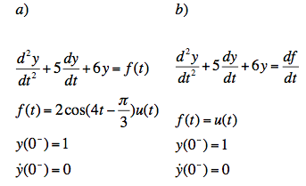
a) La solución analítica mediante transformada de laplace, puede ayudarse de programas previos
b) La gráfica de la solución analítica, puede presentar diferentes intervalos en la grafica y acercamientos a la gráfica según considere necesario.
c) El diagrama de la para Simulink, iopndicando en caso de que no sea claro, el valor de cada parámetro en Simulink, por ejemplo, reportar las condiciones Iniciales de simulación ya que no son visibles a simple vista desde el esquema inplementado.
d) La grafica de la solución en Simulink, puede presentar diferentes intervalos en la grafica y acercamientos a la gráfica según considere necesario.
e) La gráfica, en la misma figura, de la Simulación y la solución analítica.
f) En caso de que la entrada sea una función senoidal:
i) Encuentre el escalamiento y desfasamiento de la respuesta en estado estacionario a partir de la evaluación de la función de transferencia (solución analítica).
ii) Encuentre el escalamiento y desfasamiento de la respuesta forzada a partir de las gráficas de Bode generadas en Matlab (solución numérica).
iii) Verifique que concuerde la solución analítica y la solución numérica
2. Un péndulo doble oscila en un plano vertical bajo la acción de la gravedad. Para desplazamientos pequeños y 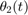, es posible demostrar que las ecuaciones diferenciales del movimiento son:
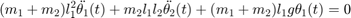
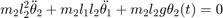
donde ,  , 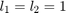, 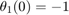, 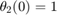, 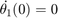 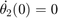.
, 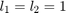, 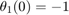, 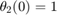, 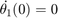 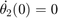.
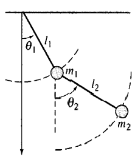
a) Realiza la solución símbolica como en el siguiente documento , y gráfica las soluciones
b) Implementa las simulación en Simulink, reporta las gráficas de las soluciones
c) Reporta las gráficas de las soluciones, numérica y simbólica en la misma figura, una para cada solución.
3. En el siguiente enlace puede encontrar varias aplicaciones desarrolladas en Simulink, elija una de estas aplicaciones, explique el problema y la implementación y reproduzca los resultados, debe tomar en cuenta que algunas aplicaciones requieren una investigación para poder enterlas de forma completa, no es necesario que elija la aplicación mas avanzada, el objetivo de este problema es que conozca algunas de las aplicaciones que se pueden desarrollar. Podría ser que algunos ejemplos del enlace no necesariamente enten enfocados a Simulink, para este punto es necesario que la aplicación elegida este desarrolada en Simulink.
Nota 1: El esquema implementado en simulink puede ser también una realización especifica (serie, palalelo, canónica, etc), se ha decidido exponer un esquema que no hace referencia a una realización especifica
Nota 2: Existen varias maneras de realizar la simulación en Simulink, la variedad es amplia, no se debe pensar que lo implementado en esta practica es la única manera de realizar una simulación en Simulink.
Nota 3: En Simulink puede observar muchas más herramientas que las utilizadas en esta práctica, se pueden observar bloques diseñados para diferentes ciencias.
Nota 4: Recordar que cada Bloque en Simulink va mas alla, al final cada una de las simulaciones es la implementación de métodos numéricos.
Problema 1 Ecuación a)
1. Para las siguientes ecuaciones obtenga
a) La solución analítica mediante transformada de laplace, puede ayudarse de programas previos
b) La gráfica de la solución analítica, puede presentar diferentes intervalos en la grafica y acercamientos a la gráfica según considere necesario.
c) El diagrama de la para Simulink, indicando en caso de que no sea claro, el valor de cada parámetro en Simulink, por ejemplo, reportar las condiciones Iniciales de simulación ya que no son visibles a simple vista desde el esquema inplementado.
d) La grafica de la solución en Simulink, puede presentar diferentes intervalos en la grafica y acercamientos a la gráfica según considere necesario.
e) La gráfica, en la misma figura, de la Simulación y la solución analítica.
f) En caso de que la entrada sea una función senoidal:
i) Encuentre el escalamiento y desfasamiento de la respuesta en estado estacionario a partir de la evaluación de la función de transferencia (solución analítica).
ii) Encuentre el escalamiento y desfasamiento de la respuesta forzada a partir de las gráficas de Bode generadas en Matlab (solución numérica).
iii) Verifique que concuerde la solución analítica y la solución numérica
Utilizaremos las funciones diseñadas en prácticas anteriores para obtener la solución análitica utilizacndo transformada de laplace.
Modificaremos un poco la función para solo mostrar la respuesta total analítica y solo se graficará la respuesta total en un intervalos de 10 unidades.
a) y b)
syms t;
diferenciales([6 5 1],1,[1 0],2*cos((4*t)-(pi/3))*heaviside(t),10)
RESPUESTA TOTAL
y(t)=
sin(4 t) cos(4 t) sqrt(3) sin(4 t) / sqrt(3) 29 \
-------- - -------- - ---------------- + exp(-2 t) | ------- + -- |
25 50 50 \ 5 10 /
/ 4 sqrt(3) 47 \ sqrt(3) cos(4 t)
- exp(-3 t) | --------- + -- | - ----------------
\ 25 25 / 25
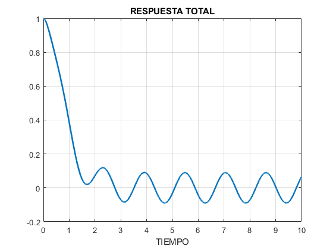 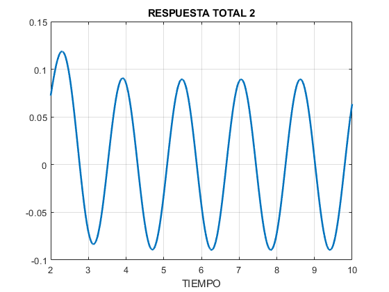 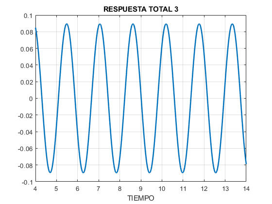 c)
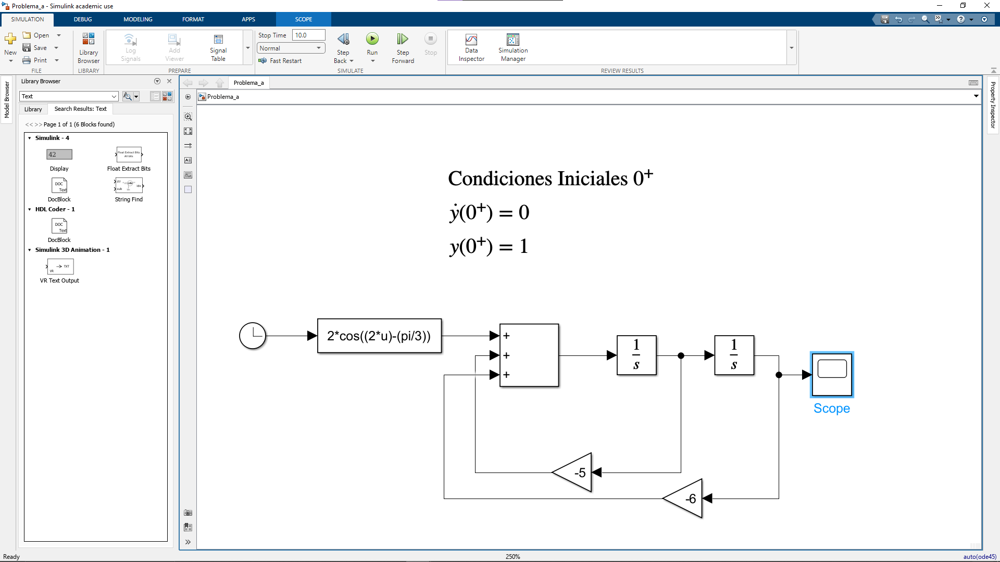
d)
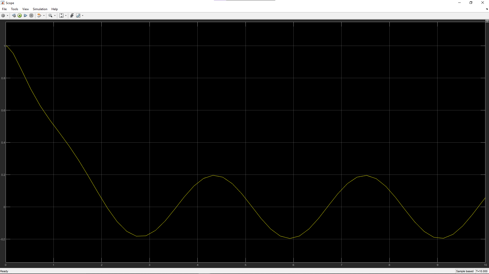
e) Se muestran ambas gráficas en la misma figura pero se solapa una con la otra y solo se puede observar la gráfica azul del analítico
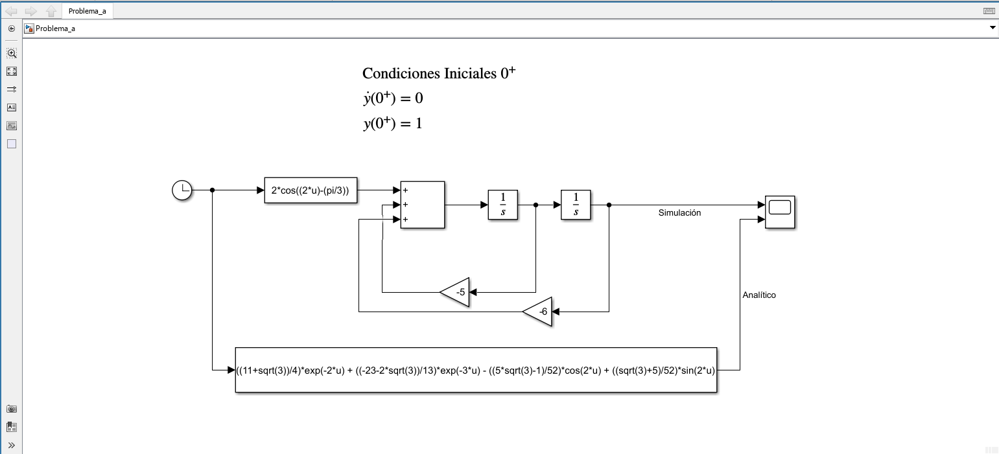
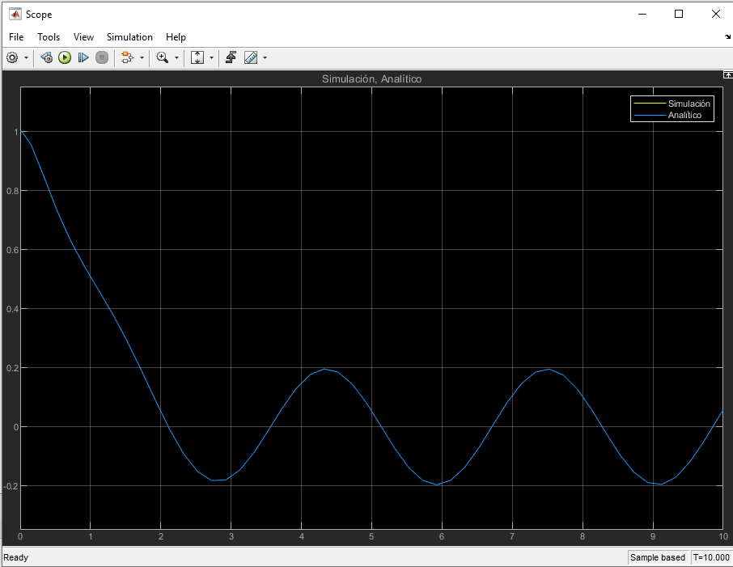
f)
i) Tenemos la función de transferencia
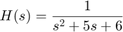
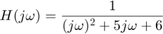
Sustituimos el valor de
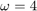
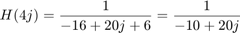
Despues obtenemos y 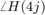
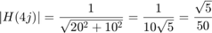
Ya que el vector se encuentra en el segundo cuadrante tendremos que sumar el resultando del arcotangente a
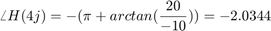
Con estos valores ya podemos obtener la respuesta en estado estacionario
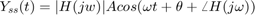
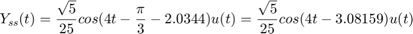
t=0:0.001:10; Y=(sqrt(5)/25)*cos((4*t)-3.08159); plot(t,Y,'LineWidth',2); title('RESPUESTA EN ESTADO ESTACIONARIO'); xlabel('TIEMPO'); grid on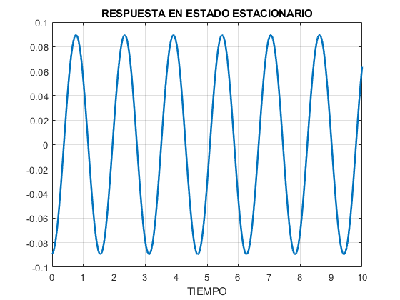
ii) La respuesta forzada es la siguiente:
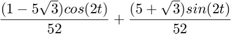
f=((-1-2*sqrt(3))/50)*cos(4*t) + ((2-sqrt(3))/50)*sin(4*t); plot(t,f,'LineWidth',2); title('RESPUESTA FORZADA'); xlabel('TIEMPO'); grid on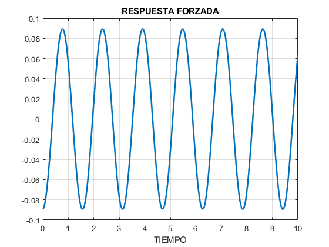
iii) Al comparar los resultados y ambas gráficas podemos observar que obtenemos el mismo resultado y coinsiden con la gráfica de la respuesta total.
Problema 1 Ecuación b)
Realizaremos el mismo procedimiento que en la ecuación anterior
a) y b)
syms t;
diferenciales2([6 5 1],[0 1],[1 0],heaviside(t),10)
RESPUESTA TOTAL y(t)= exp(-2 t) 4 - exp(-3 t) 3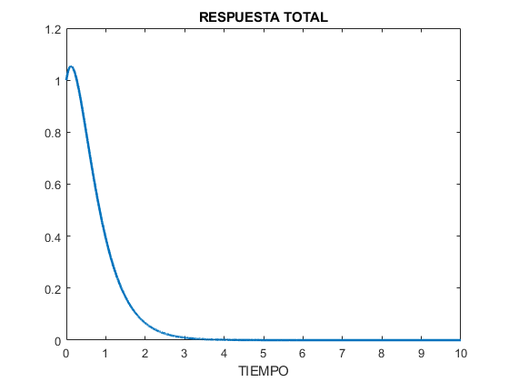
c)
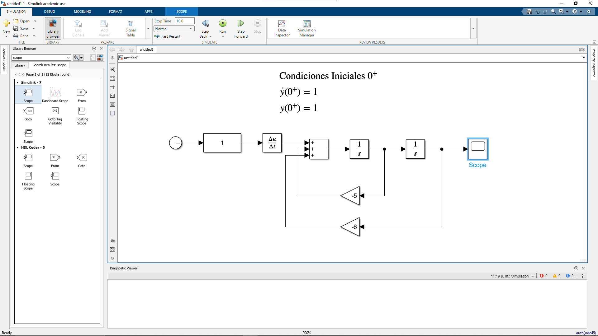
d)
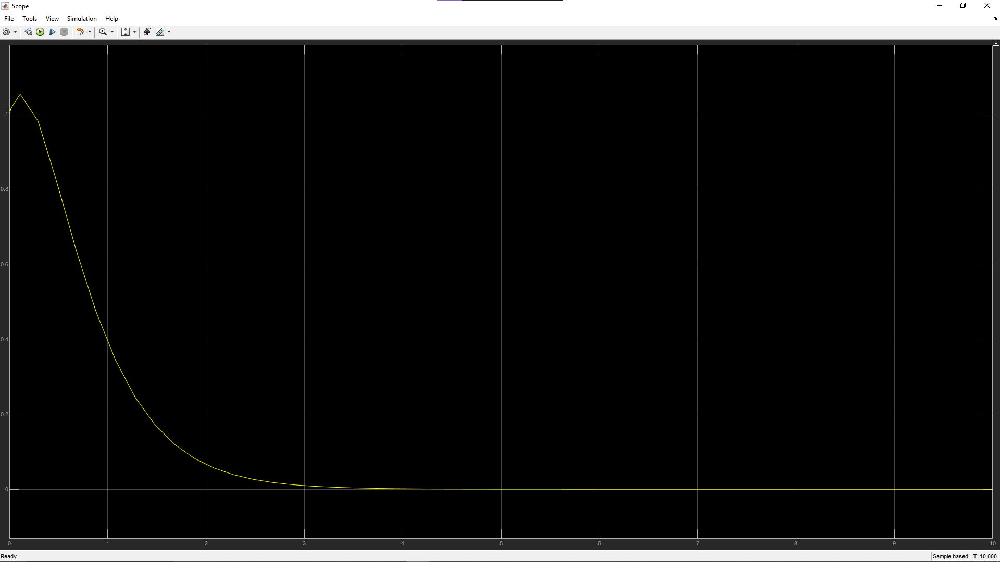
e) Se muestran ambas gráficas en la misma figura pero se solapa una con la otra y solo se puede observar la gráfica azul del analítico
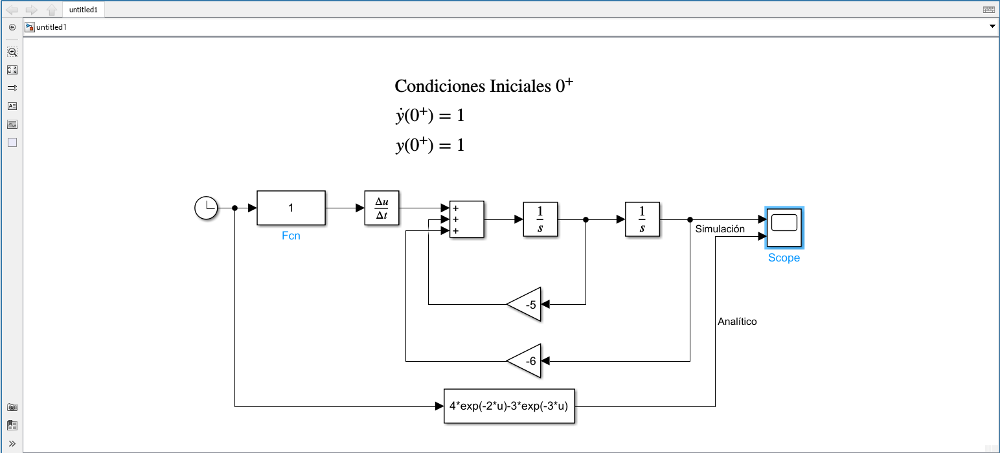
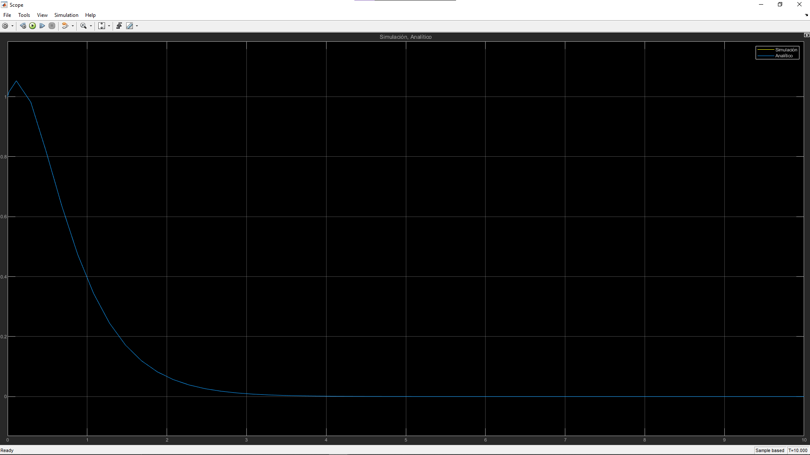